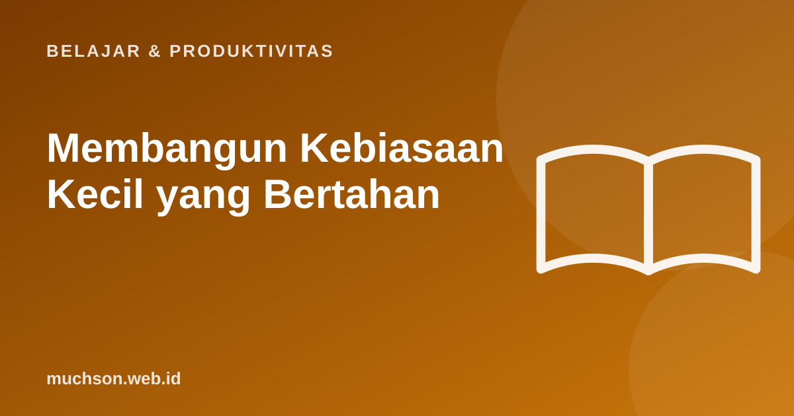

Beranda › Artikel › Belajar & Produktivitas
Belajar & ProduktivitasMembangun Kebiasaan Kecil yang Bertahan
Tahun baru, tekad besar: olahraga satu jam, membaca satu buku seminggu, belajar coding tiap malam. Dua minggu kemudian semuanya berhenti. Masalahnya bukan niat, melainkan ukuran langkah awalnya. Mulailah lebih kecil dari yang Anda kira.

Tiga prinsip
Kekuatan kemajuan kecil
Rancang kebiasaan Anda
Kesalahan umum
Tanya jawab
Berapa lama membentuk kebiasaan?
Tidak ada angka ajaib. Penelitian menunjukkan rentangnya lebar, dari beberapa minggu hingga beberapa bulan, tergantung kebiasaan dan orangnya.
Bagaimana bila saya gagal sebentar?
Wajar. Kembali secepatnya dan perkecil targetnya agar mudah dimulai lagi.
Apakah aplikasi pelacak kebiasaan membantu?
Bisa, selama sederhana. Kalender dan centang di kertas juga efektif.